|
Creating your first level
In this tutorial you are going to learn how to create a basic level that you can export and launch in the game.
Download the resulting level of this tutorial First_Level_result.zip
About tool installation and exporting
After installing the Max Payne 2 -tools with default options, you will find all the tools in "C:\MaxPayne2Dev\"-directory, and an extra copy of Max Payne 2 in "C:\MaxPayne2Dev\Game\"-directory.
The latter contains the developer version of the game and all game
data that MaxED2 requires in order to work correctly. If you compare
your standard installation and the developer installation, you will
notice that the developer version has so called RAS-packages (Remedy
Archive System) opened and all game data is in more accessible form
under "C:\MaxPayne2Dev\Game\Data\". In addition to visible
file structure differences, some menu items and game options are set
differently: when opening the developer version, the startup animation
is skipped, the game appears in window and the console output and input
with all developer related special keys are activated (for instance, go
to free camera mode with F3 during the game).
Before starting to make the first level, we should verify your
workpath by simply exporting the example level that comes with the mod tools.
Launch MaxEd2 and click File/Open and open up the "ExampleLevel.lv2" from
"C:\MaxPayne2Dev\Levels\"
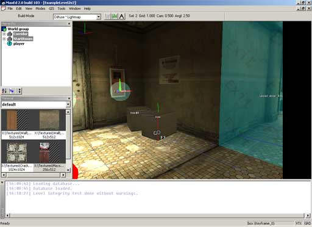
Now simply click File/Export and MaxED2 will ask where to export, showing you the directory "C:\MaxPayne2Dev\Game\data\database\levels\" by default. Just select go to "work" subdirectory and export onto
"ExampleLevel.LDB"
MaxED will display the export information on its output console, and once it's done it will display "Export complete" and export time. The export time in this example level is quite minimal, but with large levels the exporting can take minutes.
Now with the level exported properly to the game database, we can launch Max Payne 2 to take a look at the level. Note that the level was NOT exported to the database that your actual game installation uses, but to the database that the "Max Payne 2 Developer"-copy of the game uses. The tool installer also added a shortcut to "Max Payne 2 Developer" to your desktop, so launch that.
Once in the game, simply click the specialty of the developer
version: "Start Example Level", which has been added to the menus during tool installation.
Hopefully everything works. Now you have established your workpath and
can be sure that your tools are installed correctly.
Camera and editing modes
Now that you have some idea about the database structure, we can start making a level of our own. Switch back to MaxED, close the example level, and open a new level
File/New.
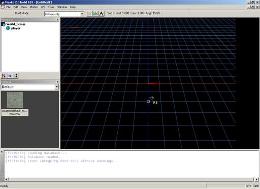
MaxED is based on modes. This simplifies the UI and editing
process by distributing different functions to relevant groups like
"all object related" and "all polygon related".
Depending on the task at hand, you need to pick the right mode to be
able to do certain things.
The mouse cursor is indicating the current editing mode. In brief, you can switch between editing modes with function keys, and the modes are:
F3 - Build, for building new meshes and creating new entities.
F4 - Polygon, for polygon-level manipulation
F5 - Object, for object-level manipulation
F6 - Texture, for texture manipulation
F7 - Portal, for portal creation
F12 - Grid, for grid manipulation (most of grid manipulation functions are available in some other modes too)
Plus there is a camera mode for moving around. You can toggle it on and off with
SPACE.
NOTE: Unlike in previous MaxED, the camera mode is now a
"supermode", which works "on top" of the current
mode, and does not interrupt anything. For example you can start drawing
a new mesh in F3 mode, go to camera mode, move to a new location, come
back to F3 mode (either by pressing Space or F3)
and place the next vertex.
Let's try the camera mode first. Press SPACE to toggle the camera mode on. You will see the mouse cursor changing into a camera icon to indicate you are in camera mode.
Moving the mouse while holding down LEFT MOUSE BUTTON (LMB), you can freely look around. Holding down RIGHT MOUSE BUTTON
(RMB), you can move forwards and backwards. Holding down MIDDLE MOUSE BUTTON
(MMB) or SHIFT you can strafe to all directions.
NOTE: MaxED2 assumes that you have a three button mouse.
Unfortunately you can not use MaxED without a third button, as there is
no shortcut to replace this function and so many of the commands are
only accessible through the middle button menu.
TIP: Additionally, by holding Ctrl and LMB you can rotate the camera around the geometry under the mouse pointer. Try it once we have built some geometry.
After familiarizing yourself with moving a bit, let's try building our first room. First let's reset the camera to its initial position by switching to F12-mode and hitting MMB for the command menu. Select
Reset Camera.
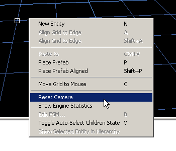
Creating geometry
To create new geometry, you need to draw the desired outline onto the grid in F3-mode. Let's create an outline of two small rooms, connected with a small corridor.
1. Enter F3-mode (build) by pressing F3 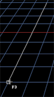
- The cursor will change indicating the editing mode
2. Make sure the grid size is set to 1 meter
- Grid size is indicated right above the MaxED2 main view.
- You can change grid size with numpad +/-
3. Click onto the grid with LMB to place the first vertex and start drawing the room shape
- To toggle between move mode and F3 mode, press
space at any time.
- To cancel the drawing, press escape
- To remove the previous vertex, press delete
4. Looking at the length indicator in the lower left corner of MaxED2, make the first line 8 meters long.
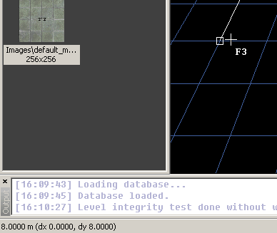
5. Keep drawing the shape as in the pictures (grid size is 1 meter)
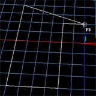
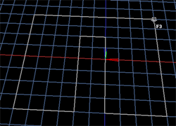
6. Once you have clicked in the final corner, click RMB to generate a 3D mesh.
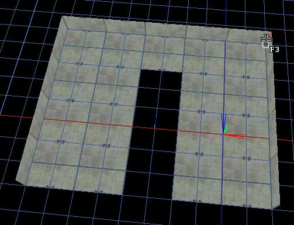
If you made a mistake and the room doesn't look right, you can go to
F5 mode, select the mesh with LMB and simply delete it.
Come back to F3 mode and start over.
The resulting mesh has its faces pointing inwards, which is the way the room geometry is built in Max Payne 2 so that's how we want it. But this room is still only 1 meter high so we need to make it higher.
1. Enter F4-mode (polygon) by pressing F4
- The cursor will change and the polygon under the mouse pointer will always be highlighted
- Press the "culled" button down at the toolbar to enable the selection of backface culled
polygons. Handy shortcut to this is insert
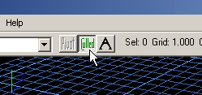
3. Point at the ceiling polygon, and press down arrow to extrude the room until it is 4 meters high
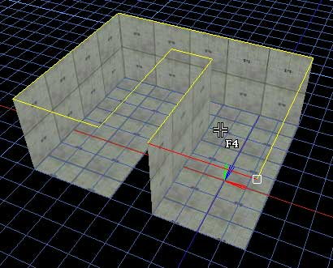
Now the mesh already looks like the way it will look in the game, but it doesn't meet the minimum requirements for it to be exported into the game yet. We still need to define the
starting location for the player, and we need to build at least one portal (Also called "exit") for purely technical reasons. Portals cut the level geometry into "rooms" and are used for visual optimization, just like in Max Payne 1.
First let's build the portal. We want to create it to the other end of the corridor.
1. In F4-mode, point at the polygon as indicated in the picture, and press
Shift-A to place the grid there.
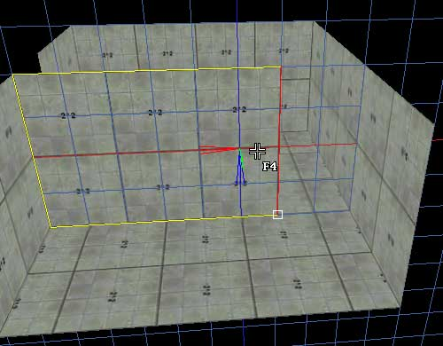
2. In F7-mode (portal), you can see a similar polygon / edge highlighting running actively as in F4 mode. Highlight any of the four edges that is intersecting with the grid, and click LMB to create the first vertex for the portal
- To toggle between move mode and F7-mode, press space at any time.
Unlike in MaxED1, you can go to move mode during drawing and more
easily control the process.
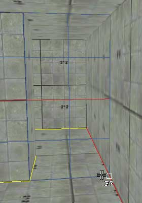
3. Keep building the shape, until you have placed all the 4 vertices.
- When drawing a portal, you MUST have highlighted an edge that is intersecting with the
grid (marked with red color in this picture).
4. When you have placed all the vertices, click RMB to create the portal. MaxED2 will still ask for vertex weld value, and we will accept the default value so just click OK.
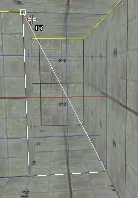
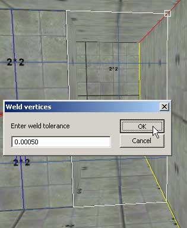
A cyan transparent surface will appear to indicate the portal (provided you have "exits" flag enabled in the
display filter), and the mesh will be divided into two rooms as you can see in the hierarchy view.
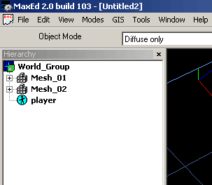
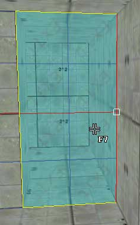
To place the Jumppoint into the level to define the starting location of the player:
1. Align the grid onto the floor (Shift-A in F4 mode)
2. In F3 mode point at the desired location on the grid and press N
to create a new entity.
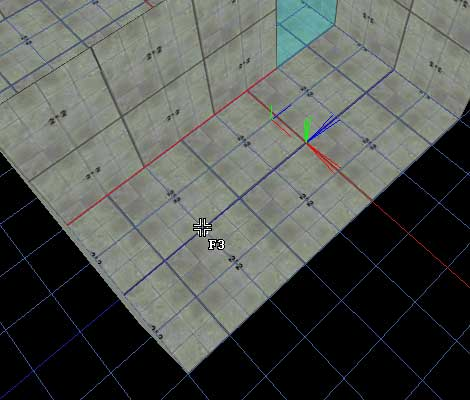
3. From the spawned "New Entity" dialog select "Jumppoint"
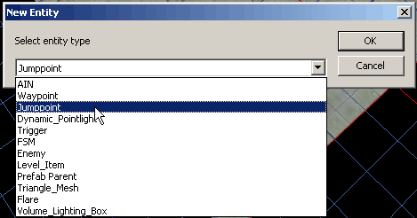
4. From the spawned "Entity Properties" dialog we don't want to change anything. Just click OK.
A red sphere will appear on the floor indicating the starting location.
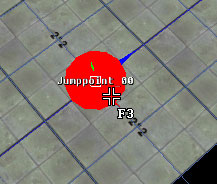
There can be multiple Jumppoints in the level, and the primary one is defined in the levels.txt script file in the game database. It is typically "::StartRoom::Jumppoint_00". When the game is not ran in developer mode, there HAS to be a
Jumppoint like that. In developer mode the game will just select one randomly if primary one is not found. To make this newly created
Jumppoint a primary one, let's still rename the room it is in as
"StartRoom"
1. In F5-mode, point at the room with Jumppoint inside (don't click!) and hit enter for properties.
2. To the "Name" field enter "StartRoom
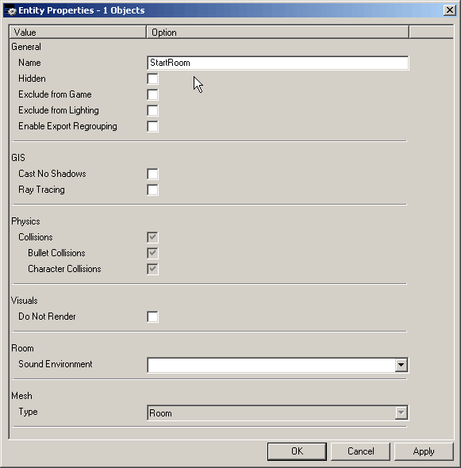
The only other setting here that is applicable for rooms is Sound
environment, which is used to select the EAX pre-set for the room.
And now we are ready to export the level to the game and play it. To export to the game, let's export it on top of the ExampleLevel.LDB and launch the game to play the level.
If you are having problems with the exporting of the level, they are likely due to redundant vertex information in the .LV2 file (causing zero area triangles). To fix this, simply select all
(Ctrl-A in F5 mode), hit F and accept the default weld value.
If for some reason other problems appear, see if Exporting
and optimization article has some solutions to offer.
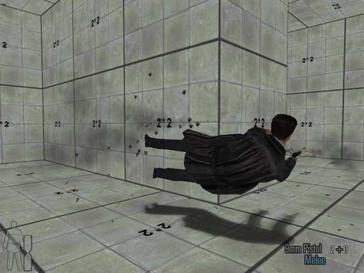
Then you should go to game and test you new cool level,
as seen here. Admittedly the looks are quite barren still: no lighting,
details, appropriate texturing or enemies, but there is no escape from the truth: we
have made a new level from scratch and taken it to the game. The
first step is taken.
And there you go with the basics. To continue building more rooms you can create the meshes in F3 mode the same way as we did before, and then
Boolean the meshes together (In F5 mode press U for union, S for subtract and
I for intersect operations). Texturing, lighting and Booleans are
explained more closely in other articles and tutorials.
Extra words about the Display Filter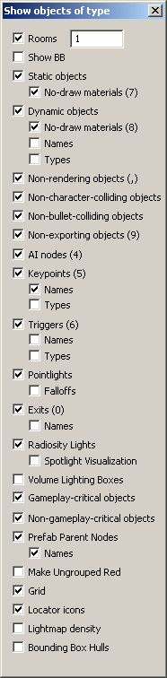
In MaxED2 the user can use Display Filter (F1) to select which types of
entities they want to have displayed in the main view. Basically you set the flags on the objects you want to have displayed at a certain time.
It also includes some other visualization options.
The shortcuts in the display filter refer to the corresponding numpad keys
Rooms - Flag to toggle room count optimization on, and count for setting the number of hops from the active room
Show BB - To display the bounding boxes of the rooms that are optimized by the above setting
Static Objects - To display static objects
- No-Draw materials - To display polygons of static objects that are using a no-draw
material (such as "Dummy" or "CharacterCollisionNodraw")
Dynamic Objects - To display dynamic objects
- No-Draw materials - To display polygons of dynamic objects that are using a no-draw material
- Names - To display the names of the dynamic objects in the main view
- Types - To display a "DO" text on the DOs in the main view
Non-rendering objects - To display objects with "Do not render" object property set.
Non-character-colliding objects - To display objects without "Character Collisions" object property set
Non-bullet-colliding objects - To display objects without "Bullet Collision" object property set
Non-exporting objects - To display objects with "Exclude from Game" object property set.
AI nodes - To display the AI nodes
Keypoints - To display floating FSMs, Characters, Jumppoints, Waypoints, Level items and Flares
- Names - To display the names of above entities
- Types - To display the types of above entities
Triggers - To display all types of triggers
- Names - To display the names of the triggers
- Types - To display the types of the triggers, basically displays what propery flags the triggers have set (Player collision, Use, Enemy collision, Bullet collision, Look At, Visibility)
Pointlights - To display the pointlights
- Falloffs - To display the falloffs of pointlights
Exits - To display the portals
- Names - To display the names of the portals
Radiosity Lights - To visualize the radiosity light emitters
- Spotlight Visualization - To visualize the spotlight cones
Volume Lighting Boxes - To display the volume lighting boxes (If there are volume lighting boxes in the rooms, they will get volume lighting calculated only inside the boxes. Otherwise the whole room gets volume lighting. Volume lighting is used to light the characters and selected
DOs)
Gameplay-critical objects - To display all the gameplay critical objects. (Gameplay critical objects are all the objects with any dynamic properties, all the rooms, and all the static objects and AI-nodes with with "Gameplay Critical" object property set. Basically this flag is used only when doing "File" -> "Export Selection Gameplay Critical", which means the game doesn't export all the static geometry nor all the AI nodes which aren't necessarily needed when testing some small things the levels, and the user can still include some objects to the gameplay critical export as well)
Non-gameplay-critical objects - To display AI-nodes and static objects without "Gameplay Critical" object property set. This is a handy tool for selecting the critical ones you want to have included in the export.
Prefab Parent Nodes - To display the prefab parent nodes. Prefab parents are also hidden when a prefab is not being edited, but this flag is handy when editing a prefab whose prefab parent node tends to get in the way.
- Names - To display the prefab master names of the visible prefab parent nodes. That is, the name of the prefab as it is in the prefab list, NOT the name the instance has in the level hierarchy.
Make Ungrouped Red - To display all the ungrouped objects with red bounding box.
Grid - To display the grid
Locator icons - To display locator icons that are used for example when locating prefabs or materials from the level.
Lightmap density - To display the lightmap densities with color codes.
Bounding Box Hulls - To display a red wireframe bounding box for objects with "Generate Bounding Box Hull" object property set. This is used to view the orientation of the bounding box hull, as it is always oriented the same way as the pivot point of the object and may need re-orientation of the pivot point. Bounding Box Hulls can be used to quickly and easily simplify the "character collision" geometry, which is used for ragdolls and physical objects as well as living characters. Thus the object needs to be character colliding before this object property can be used. The bullet collisions are still performed against the exact visual geometry.
Many of the entities in the levels are affected by multiple different flags of the display filter, and in those cases you need to have all of the affecting flags set in order for the object to be displayed. For example if you have a dynamic object that is also set to non-rendering in its object properties ("Do not render"), you need to have both "Dynamic Objects" and "Non-rendering objects" set.
Extra words about the Grid
In MaxED2, the grid is probably your most important tool. The whole editing philosophy revolves around one free-camera viewport and freely alignable grid.
The grid can be aligned by highlighting a polygon in F4-mode and pressing
A (Align grid to selected face) or Shift-A (align in world coordinate system).
Aligning grid to selected face (A) means the grid will be aligned on the plane of the highlighted polygon, orientated by the highlighted edge (red line indication), and snapped to the highlighted vertex (white square
indication, a tick mark).
Align in world (Shift-A) means the grid will be aligned, orientated and snapped along the absolute world coordinate that is closest to the highlighted polygon. The current grid size selection is used as the world grid division as well.
As a rule of thumb you should always when possible use Shift-A
to ensure that the microscopic deviations in the geometry don't cumulate over time when
continuously aligning grid to misaligned surfaces/edges. The floating point inaccuracy alone prevents objects to stay in perfect alignment and for that reason you should use the fixed absolute world coordinates as your alignment authority. Note that the selected grid size also determines the grid size of the absolute world coordinates.
You can also re-orientate and re-snap the grid by any other edge and/or vertex in the world. To do this you must be in F3-mode, highlight an edge and a vertex, and press
A. The grid will be re-orientated according to the projection of the edge along the normal of the grid, and the pivot point of the grid will be snapped to the projection of the
highlighted vertex (along the normal of the grid).
You can also snap the grid pivot point to an intersection point of an edge and the grid. To do this, in F3-mode highlight an edge that is in intersecting alignment to the grid, and press
Shift-A.
Additionally in F12 mode you can rotate the grid freely (Hold 1, 2 or
3 and drag), rotate the grid by 90 degrees (4, 5 or
6), move grid (LMB or RMB and drag, or Arrow keys and
PageUp & PageDown)
With free rotation, as with all free rotation in MaxED2, the system snaps by the user-selected angle value, as displayed tool bar along the Grid size, and Camera movement speed. You can change this angle by SHIFT + numpad +/-
Play around with the grid for a while and you'll get the hang of it.
Fluent grid use is the key to fluent MaxED2 use especially when creating
new geometry.
|